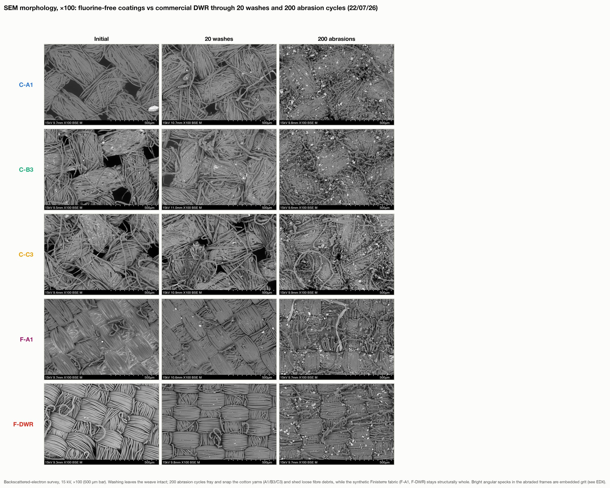
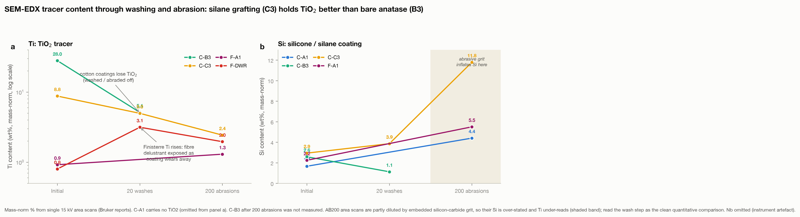

In the lab · Final results
The results.
The test programme is complete: repellency, shedding, durability through 200 abrasion cycles and 20 washes, and the worn surfaces under the electron microscope. Here is what the measurements say, including the parts that did not go the way I hoped.
Last updated 22 July 2026 · testing complete, full analysis in the dissertation
The samples
Seven coatings, two fabrics.
Everything is compared on the same footing: plain cotton and Finisterre's own fabric, each with an uncoated control, my emulsion on its own, and the emulsion loaded with titanium dioxide. Finisterre's commercial DWR finish is the benchmark I am trying to match.
- C-U / F-U. Uncoated cotton and uncoated Finisterre, the controls.
- A1. My emulsion only, no particles.
- B3. Emulsion plus 3 wt% bare anatase titanium dioxide.
- C3. Emulsion plus 3 wt% silane-treated anatase (the VTMS tweak).
- F-DWR. Finisterre's existing commercial finish, the benchmark.

Five coatings, two uncoated controls, three swatches of each.
More detail
Substrate (C cotton, F Finisterre), coating, and particle type for every code used on this page.
Source: sample map, n = 3 per codeRepellency
Every coating makes water bead.
Water contact angle is the first test: how spherical a droplet sits on the surface. Above 90° is hydrophobic, and the superhydrophobic target is 150°. Every coating I made clears the hydrophobic line comfortably and holds around 130°, right alongside the commercial finish.

All three cotton coatings bead water as well as the commercial DWR.
More detail
All three cotton coatings sit at 132 to 135°, clustering within a few degrees of each other. Finisterre's commercial DWR sits at about 132°, so on this measure my coatings sit right alongside it. Emulsion-only on Finisterre (F-A1) is lower at about 107°. Uncoated Finisterre wets out, its contact angle collapsing as the drop soaks in.
Source: fig02, sessile drop, RMSE-gated mean, 2 to 10 s window, n = 3- The honest caveat. Static contact angle does not separate the two particle treatments, bare versus silane-treated. If the silane helps, it should show up in shedding and durability, not here.
- A corrected control. An early reading put uncoated cotton near 110°, but that was a measurement artefact: the software had locked onto a droplet perched across the weave. Re-measured, uncoated cotton wets out at about 39°, so the coated fabrics sit roughly 95° above their own baseline.
Shedding
Beading is not the same as shedding.
This is the honest part. A high contact angle means a drop sits as a bead, but roll-off angle asks the harder question: does it actually run off a tilted surface? Here the commercial finish is still ahead.

Fresh coatings bead but do not shed. Only the commercial DWR rolls a small droplet.
More detail
With a small droplet, only the commercial F-DWR rolled at all (around 57° on average). Every one of my fluorine-free coatings pinned the drop in place, even tilted to the 90° limit. After a wash and with a larger droplet, all of them shed, and the commercial finish is still the best.
Source: fig03, RollOff_angles.csv, 1 to 2 Jul 2026, n = 3| Sample | What it is | Roll-off angle |
|---|---|---|
| F-DWR | Commercial benchmark | ~24° |
| C-B3 | Emulsion + bare anatase | ~37° |
| C-A1 | Emulsion only | ~43° |
| C-C3 | Emulsion + silane-treated anatase | ~49° |
| F-A1 | Emulsion only, on Finisterre | ~59° |
What this means. Fresh, my coatings bead like the commercial finish but do not shed like it. The difference is in how the drop lets go: on my coatings the back edge of the drop grips the fabric instead of releasing. What wear does to that gap is the next section.
Durability
Abrasion and washing tell opposite stories.
A coating is only useful if it lasts. I put the whole sample set through 200 sandpaper abrasion cycles and 20 accelerated washes, re-measuring roll-off and contact angle at every stage, then put the worn surfaces under the electron microscope.

Abrasion degrades nothing. Washing weakens every coating, the commercial finish fastest.
More detail
Two hundred abrasion cycles degrade none of my coatings: roll-off drifts down rather than up. I do not read that as the coating improving, because the samples that fell furthest are the ones that started highest (r = 0.97), and repeated measurements tend to drift back toward the middle. The fair comparison is on the same fabric: fresh, the commercial finish clearly beats my emulsion on Finisterre (24° against 59°); after 200 cycles the two read about the same (31° against 27°). Washing is the clearer result: over 20 cycles roll-off rises for every sample, and the commercial DWR degrades fastest and most steadily, about 2.6° per wash, the steadiest trend in the whole dataset. My cotton coatings finish 20 washes near where they started.
Source: fig17, ROA_durability_long.csv, abrasion 0 to 200 and wash 0 to 20, 6 to 14 Jul 2026, n = 3Washed swatches pin the drop. Abraded ones shed it easily.
More detail
A droplet placed on a swatch, then the surface tilted until the droplet either rolls away or stays pinned. The difference between the two durability tests is easy to see: on the washed swatches (W20) the droplet flattens, grips the fibres and holds on, while on the abraded ones (AB200) it stays beaded and rolls off. That is the same story the chart above tells, washing is what wears these coatings out, not rubbing. These clips were filmed after the full test series had finished, on the same end-point swatches, so they are an illustration of the effect rather than a measurement; the measured results are in the charts.
Roll-off demonstration, filmed after testing concluded, 14 Jul 2026. Illustrative only, not a measured result.
Contact angle barely moves through 20 washes and 200 abrasion cycles.
More detail
The cotton coatings hold a contact angle of about 120 to 142° across twenty washes and two hundred abrasion cycles. Washing trims the angle slightly; abrasion, if anything, nudges it up. This shows the coating survives washing and abrasion rather than washing or rubbing off. Contact angle called every sample unchanged while roll-off moved by 20 to 50°, so judging a finish on contact angle alone would have missed all of this.
Source: fig18, WCA_durability_long_mean.csv, wash 0 to 20 and abrasion 0 to 200, 29 Jun to 14 Jul 2026, n = 3
Under the microscope, washing leaves the weave intact. Abrasion frays the cotton.
More detail
Twenty washes leave every weave intact. Two hundred abrasion cycles fray and snap the cotton yarns, while the synthetic Finisterre fabric keeps its structure; the bright specks on the abraded samples are grit from the abrasive paper. Worth noting: the cotton roll-off numbers were still easing down on fabric this worn, which is another reason not to read the abrasion trend as the coating getting better.
Source: fig21, SEM at x100 on spare test swatches, 15 kV
The coating chemistry stays on the fibre. The silane-treated particles seem to hold on better through washing.
More detail
EDX on the worn swatches tracks the coating's elements through the wear series. The cotton coatings keep their silicone through both tests, and infrared backs that up: the silicone bands sit at 100 to 124% of their starting level after 20 washes and 200 abrasions. The titanium is the interesting part: the bare particles lose about four fifths of their titanium signal to washing while the silane-treated ones fall more gently. That is the first measurement where the two particle types look different. It is one scan per point, so it needs repeat measurements before it counts as more than a hint. The commercial finish shows no silicone bands at all: it is a different chemistry, not a thinner version of mine.
Source: fig23 and FTIR band ratios, single area scans per stageWhat this means. Neither wash nor abrasion strips the coating off: the chemistry stays on the fibre through both. Washing is the shared weakness for shedding, and it is the commercial benchmark that degrades fastest there, while my cotton coatings end 20 washes close to where they began. None of this shows up in contact angle, which is why roll-off is the number to watch. With n = 3 these are consistent trends rather than firm statistics.
Composition
What is actually on the fabric.
SEM-EDX reads the elements on the fibre surface. Titanium tracks the titanium dioxide I added, and silicon tracks the silicone and silane in the coating. Both show up exactly where they should, and the commercial finish looks chemically nothing like mine.

The titanium and silicon tracers confirm the particles and silane are on the fabric.
More detail
On cotton, titanium is near zero on the uncoated and emulsion-only samples, then rises to 28% on the bare-anatase C-B3 and 8.8% on the silane-treated C-C3. Silicon is zero uncoated and 1.7 to 2.9% across the coatings, highest on C-C3 where the silane shell adds its own silicon. The commercial F-DWR shows almost nothing here: about 0.8% titanium and no silicon, so it is a different chemistry to mine. These are single-area scans, so read them as showing what is present rather than a precise loading.
Source: fig07, SEM-EDX at x2000, mass-normalised %
The coating spreads across the fibres, not in clumps.
More detail
Elemental maps put the titanium and silicon across the coated fibres rather than in isolated clumps, which is what I want for an even coating.
Source: fig08, SEM-EDX elemental maps (B3, C3, F-A1)Chemistry
The right bonds are there.
Infrared spectroscopy checks the chemistry rather than the elements. On the fabric it confirms the coating is deposited and has formed a siloxane network. On the titanium dioxide powder it is where I can actually see the silane grafting.

The coating chemistry is on the fibre.
More detail
The carbon-hydrogen bands grow with coating, and a siloxane (Si-O-Si) network shows up clearest on Finisterre, where cotton's cellulose does not mask it. This method is semi-quantitative, so it confirms the coating chemistry but cannot on its own separate bare from silane-treated anatase.
Source: fig04, ATR-FTIR, replicate means
Weak but real signs the silane grafted to the particles.
More detail
Bare anatase is flat through the organic region, while the silane-treated powders pick up carbon-hydrogen and siloxane bands. The signal is weak, but it is the clearest grafting evidence I have, and it is why I chose the vented-reflux batch (T2) to carry into the C3 coating.
Source: fig05, ATR-FTIR of TiO2 powders, T0 to T3Digging deeper
Supporting structure and corroboration.
These back up the headline results: an independent check on the titanium signal, the particle and coating morphology under the microscope, and the smaller supporting measurements.


What's next
The part that actually decides it.
My coatings match a commercial DWR on how water beads and on surviving wear, and the commercial finish keeps its fresh-shedding edge until washing takes it away. The clearest lesson is about measurement: contact angle, the number most often reported, missed changes that roll-off picked up easily. Two things follow.
- Fix the fresh shedding. Re-run the emulsion so a fresh droplet releases as easily as it beads. A rinse test and a repeat at controlled coating weight would show whether leftover surfactant or an over-thick film is doing the pinning.
- Repeat the worn-surface scans. The EDX and infrared measurements on worn swatches are single scans per condition. Repeats would settle whether the silane-treated particles really are held on better, and a standard spray test would put the shedding numbers on terms other labs can compare.
A note on these numbers. The test programme is complete and these are the final measured values; the full analysis, statistics and caveats are in the dissertation. Three samples per condition, cut from one coated batch, so trends are read cautiously.